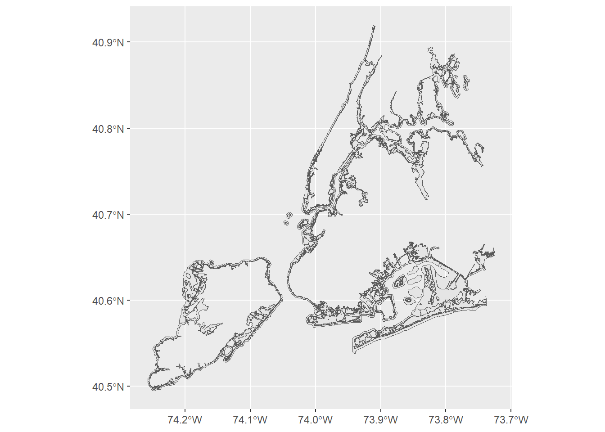
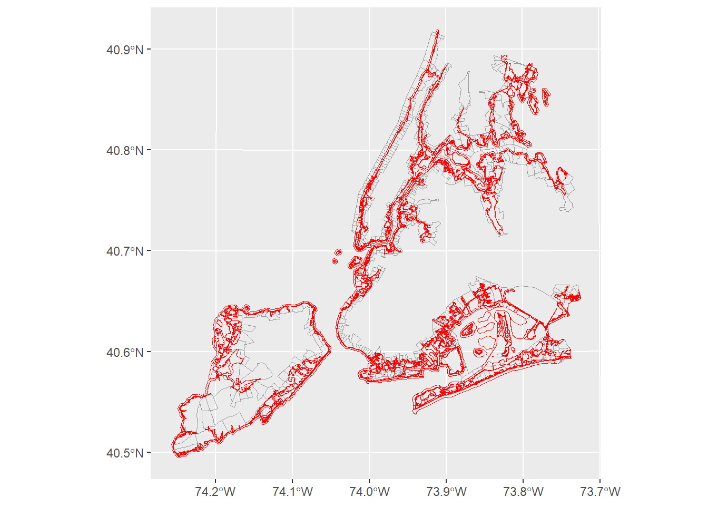
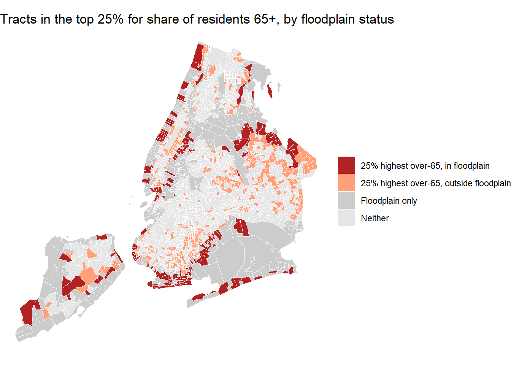
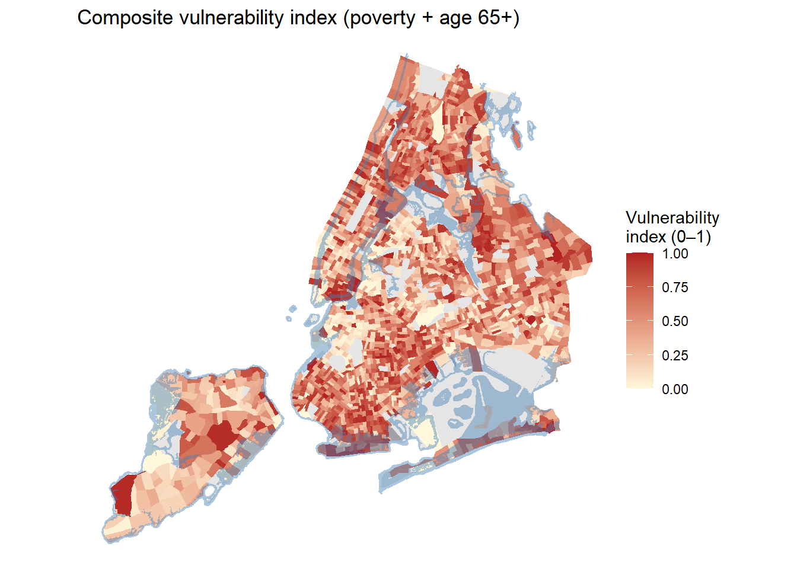
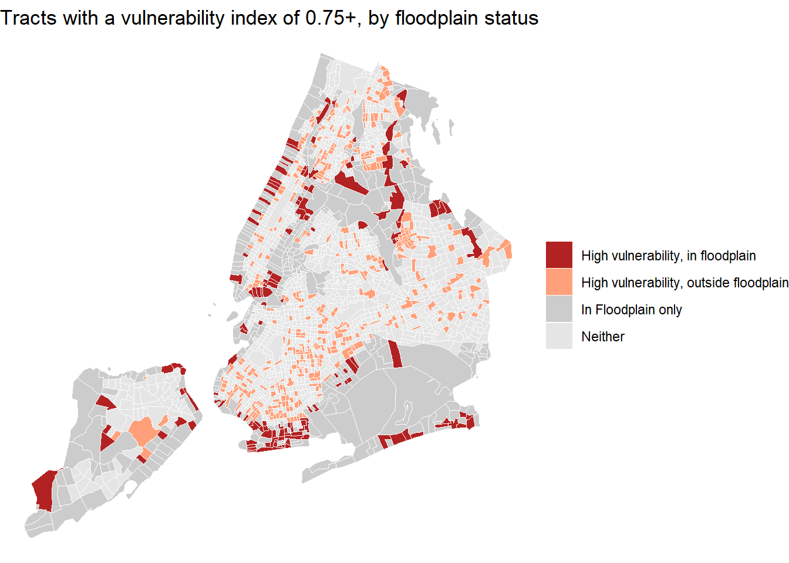

library(tidyverse)
library(sf)
# You may need to install the package tidycensus first: install.packages("tidycensus")
library(tidycensus)Download and Analyze Census Data with
11.118/11.218 Applied Data Science for Cities
Background
Planners are paying more and more attention to climate risk: extreme heat, flooding, sea level rise. These hazards do not affect everyone equally. Whether a community is at risk depends on two things (Wilson & Chakraborty, 2017; Cardona et al. 2012):
- Exposure: is the place physically at risk? For example, is a neighborhood inside a flooding zone, or is it a hot spot during a heat wave?
- Social vulnerability: how well can the people who live there prepare, evacuate, and recover? Households with lower incomes, older adults, young children, people without a car, or people with limited English often have a harder time doing so.
Exposure can be measured with environmental data (flood maps, temperature, elevation, etc.). Social vulnerability is usually measured with Census data. A well-known example is the CDC’s Social Vulnerability Index (SVI), which combines 16 Census variables to rank every census tract in the US by how vulnerable its residents are. The places of greatest concern are where high exposure and high social vulnerability overlap.
In this tutorial we will:
- Load New York City’s projected 2050s floodplain (exposure).
- Download American Community Survey (ACS) data with
tidycensus(social vulnerability). - Map where exposure and vulnerability overlap.
- Build a simple composite vulnerability index, following the CDC’s ranking method.
NYC Floodplain
New York City is frequently hit by storm surge, and the city has been very active in climate resilience planning. The 100-Year Floodplain for the 2050s shows the area that has a 1% chance of flooding in any given year, under a projected scenario of 2.5 feet of sea level rise by the 2050s.
Download the Future Floodplain 2050s dataset from NYC OpenData (choose the GeoJSON format). Save it in your data folder. Below we use st_read() to read the file and name it floodplain.
floodplain <- st_read("data/Future_Floodplain_2050s_20261005.geojson")The floodplain data has a column fld_zone with codes such as "AE", "VE", and "AO". These are FEMA Flood Insurance Rate Map (FIRM) zone designations:
- A, AE, AO zones are Special Flood Hazard Areas, the high-risk zones.
- VE zones are even higher risk, because on top of flooding they also face wave action along the coast.
Some polygons have an empty zone code. We filter them out and keep only valid flood zones.
floodplain <- floodplain |>
filter(fld_zone != "")Let’s make a quick map to check that the data looks right.
floodplain |>
ggplot() +
geom_sf()
You should see the outline of the NYC coastline: the floodplain hugs the waterfront of all five boroughs, with large areas around Jamaica Bay.
Collect US Census Data using tidycensus
A review of tidycensus key steps
To download data with tidycensus, you will need the following:
A Census API key. You can request one here; it is free and arrives by email.
Run the following line once to install the API key (that is, save it in your R environment). Including
install = TRUEmeans R remembers the key, so you won’t need to enter it again next time. You should not share your key or leave it in documents you submit.
census_api_key("YOUR KEY HERE", install = TRUE)- A geography to look up (e.g., tract or block group).
- The variables we want. Each ACS variable has an ID made of a table ID plus a 3-digit variable number, e.g.
B17001_002. You can also browse all variables inside R withload_variables(). - The state and county that define your study region.
- The survey you’d like to use (e.g., Decennial Census, ACS 1-year, or ACS 5-year).
- The year you want data for (e.g., the most recent 5-year data).
Two more arguments are usually included, because they make the results easy to use in our R workflow:
output = "wide"gives each variable its own columns, which makes column-wise calculations (like dividing one variable by another) simple. Each variable gets two columns: one ending inE(the estimate) and one ending inM(the margin of error).geometry = TRUEreturns a simple features (sf) object, with the boundary of each tract attached, so you can map the result right away.
How to find table IDs and variable IDs
Census Reporter is a friendly website for browsing ACS tables. Start from the list of table codes by topic. Under each topic you can see which tables are available and which survey questions were used to produce them. This helps you decide which table answers your question.
Urban studies research frequently uses tables like these:
- B01001: Sex by age
- B02001: Race
- B03002: Hispanic or Latino origin by race
- B19013: Median household income
- B17001: Poverty status
- B25003: Housing tenure (owners and renters)
- B25106: Housing cost burden (housing costs as a percentage of household income)
- B25002: Occupancy status (occupied or vacant)
- C16002: Household language by limited English speaking status
To find specific variable IDs, click into a table. For example, on the page for B01001: Sex by Age you will see the table’s structure, its universe (who is being counted), and the list of variables. Hover your mouse over a row to see its variable ID.
Download data
When you pull several tables for the same place and year, it’s a good idea to set these values up once as constants (also called “global variables”). If you later want to change something for all tables, for example switch to block groups or a different year, you only need to edit these lines and rerun the code.
geography <- "tract"
state <- "NY"
county <- c("Bronx", "Kings", "New York", "Queens", "Richmond")
year <- 2024
survey <- "acs5"Table 1: Poverty status
Let’s start with B17001: Poverty Status. We only need two variables from it:
B17001_001: the total population for whom poverty status is determinedB17001_002: the population with income below the poverty level
A note on “universes”: different ACS tables count different “totals”. The universe for B17001 is not the total population. It excludes people for whom poverty status can’t be “determined” (for example, people living in college dorms or institutions).
First, store the variable IDs in a vector.
# B17001: Poverty Status ----
B17001_Vars <- c("B17001_001",
"B17001_002")Then make the API call. Since this is the first table, we ask for geometry = TRUE, so the tract boundaries come with it.
B17001 <- get_acs(
geography = geography,
state = state,
county = county,
variables = B17001_Vars,
survey = survey,
year = year,
output = "wide",
geometry = TRUE
)Now clean up the table: calculate the poverty rate with mutate(), then use select() to keep only the columns we need, with clear names.
B17001_df <- B17001 |>
mutate(pov_rate = B17001_002E / B17001_001E) |>
select(GEOID, pov_rate)The geometry column stays even though we didn’t select it. Geometry in an sf object is “sticky”.
Table 2: Sex by age
Next, B01001: Sex by Age. This table is useful for calculating the share of people under 18 or over 65, two groups who usually need more help during an emergency.
This table is different from the poverty table. It doesn’t have one variable for “under 18”. Instead, it splits the population into many small age groups, separately for males and females. So we need to read the variable list carefully and pick every age group that belongs to our two groups:
- Under 18: male
003–006(under 5, 5–9, 10–14, 15–17) and female027–030 - 65 and over: male
020–025(65–66, 67–69, 70–74, 75–79, 80–84, 85+) and female044–049 - Total population:
001
# B01001: Sex by Age ----
B01001_Vars <- c("B01001_001",
"B01001_003",
"B01001_004",
"B01001_005",
"B01001_006",
"B01001_020",
"B01001_021",
"B01001_022",
"B01001_023",
"B01001_024",
"B01001_025",
"B01001_027",
"B01001_028",
"B01001_029",
"B01001_030",
"B01001_044",
"B01001_045",
"B01001_046",
"B01001_047",
"B01001_048",
"B01001_049")This time we leave out the geometry argument. We already have the tract boundaries from the first table, and we just need to join this table to it. Check out the result from the API call to see what the table looks like.
# Make the API call
B01001 <- get_acs(
geography = geography,
state = state,
county = county,
variables = B01001_Vars,
survey = survey,
year = year,
output = "wide"
)Add up the relevant age groups to get the number of people under 18 and over 65 in each tract.
B01001_df <- B01001 |>
mutate(
under18_pop = (
B01001_003E + B01001_004E + B01001_005E +
B01001_006E + B01001_027E + B01001_028E +
B01001_029E + B01001_030E),
over65_pop = (
B01001_020E + B01001_021E + B01001_022E +
B01001_023E + B01001_024E + B01001_025E +
B01001_044E + B01001_045E + B01001_046E +
B01001_047E + B01001_048E + B01001_049E )
)Then turn the counts into shares of the total population (the universe of this table is the total population, B01001_001), and keep only the columns we need.
B01001_df <- B01001_df |>
mutate(under18_ratio = under18_pop / B01001_001E,
over65_ratio = over65_pop / B01001_001E) |>
select(GEOID, under18_ratio, over65_ratio)Join the tables
Join the age table to the poverty table using the shared GEOID column. Because B17001_df (the one with geometry) comes first, the result is still an sf object we can map.
acs_data <- left_join(B17001_df, B01001_df, by = "GEOID")When you need more Census variables later, repeat the same four steps: set up the variables → make the API call → clean up the table → join it to acs_data.
Spatial Analysis
Now we want to do a kind of “select by location”: find the tracts that fully or partially overlap with the floodplain. These are the tracts exposed to flood risk.
Check the coordinate reference systems
Before any spatial operation, check that both layers use the same coordinate reference system (CRS).
st_crs(floodplain)$epsg[1] 4326st_crs(acs_data)$epsg[1] 4269They are different (4326 for the floodplain and 4269 for the Census data), and both are geographic CRSs, measured in degrees. For potential need of calculating areas, we transform both layers into the same projected CRS, measured in feet. Here we use EPSG 2263, the New York State Plane (Long Island zone), which is the standard projection for NYC.
acs_data <- st_transform(acs_data, 2263)
floodplain <- st_transform(floodplain, 2263)Find tracts that intersect the floodplain
Last time, we used st_intersection(), which cuts the geometries and returns the actual overlapping pieces. This time we don’t want to cut anything. We only want to know whether they “intersect”. For that, we use st_intersects().
exposed_tracts <- st_intersects(acs_data, floodplain)The result is a special kind of list with one element per tract. Each element contains the row numbers of the floodplain polygons that intersect that tract. If a tract doesn’t touch any floodplain polygon, its element is empty.
This format makes it easy to create a TRUE/FALSE indicator. lengths() counts how many floodplain polygons each tract touches. If the count is greater than 0, the tract is in the floodplain. We will add this information back into acs_data.
Note: lengths() sounds like measuring length, but this one is the same as len() in Python, it’s a base R function that returns the number of items in a vector.
acs_data <- acs_data |>
mutate(in_floodplain = ifelse(lengths(exposed_tracts) > 0, TRUE, FALSE))We now have a new column, in_floodplain, telling us whether each tract intersects the floodplain. Plot the exposed tracts together with the floodplain for a quick visual check:
ggplot() +
geom_sf(data = acs_data |> filter(in_floodplain == TRUE),
fill = NA, color = "gray60") +
geom_sf(data = floodplain, color = "red", fill = NA)
Before moving on, save the acs_data we have built so far in your data folder. That way you can continue working on it in the Exercise without downloading everything from the Census again.
saveRDS(acs_data, "data/acs_data.rds")Next time when you need it, load it back using readRDS(). A .rds file is a compact format to save any data format as it is, so the data will come back as the same sf object we are using now.
Mapping Exposure and Vulnerability
Our acs_data now looks similar to the Opportunity Zone dataset from the first lab: each tract has a yes/no column (in the floodplain or not) plus several demographic variables.
Next, we overlay exposure with vulnerability. Let’s start with one variable: the share of residents 65 and over. We will find the tracts in the top 25% for this share, meaning the quarter of NYC tracts with the highest proportion of older residents, and see which of them are also in the floodplain.
First, quantile() finds the cut points that divide tracts into four equal groups, and cut() assigns each tract to a group. (na.rm = TRUE skips tracts with no population, such as parks and airports, where the ratio can’t be calculated.)
Then case_when() creates four map categories. You can think of case_when() as an advanced version of ifelse(): instead of one condition with two outcomes, it checks several conditions in order: are you both top 25% and in floodplain? are you just top 25% but not in floodplain, etc.
plot_data <- acs_data |>
# cut over65 ratios into quantiles
mutate(over65_quartile =
cut(over65_ratio,
breaks = quantile(over65_ratio, c(0, 0.25, 0.5, 0.75, 1), na.rm = TRUE),
labels = c("Bottom 25%", "25–50%", "50–75%", "Top 25%"),
include.lowest = TRUE)) |>
# combines the quartile with the floodplain indicator
mutate(
group = case_when(
over65_quartile == "Top 25%" & in_floodplain ~ "25% highest over-65, in floodplain",
over65_quartile == "Top 25%" ~ "25% highest over-65, outside floodplain",
in_floodplain ~ "Floodplain only",
TRUE ~ "Neither"
))Map our result and you will see what we were trying to do:
plot_data |>
ggplot() +
geom_sf(aes(fill = group), colour = "white", linewidth = 0.05) +
scale_fill_manual(values = c("25% highest over-65, in floodplain" = "firebrick",
"25% highest over-65, outside floodplain" = "lightsalmon",
"Floodplain only" = "grey80",
"Neither" = "grey90")) +
labs(fill = NULL,
title = "Tracts in the top 25% for share of residents 65+, by floodplain status") +
theme_void()
The dark red tracts are where both conditions meet: a large share of older residents and exposure to future flooding. Places like the Rockaways, Coney Island, and parts of Staten Island’s shore stand out. These are where evacuation planning and outreach to older residents may matter most.
Construct a Composite Index
So far we have looked at one variable at a time. In reality, vulnerability comes from several factors together: a tract with many older residents and high poverty is likely more vulnerable than a tract with only one of the two. A composite index combines several variables into a single score.
How to combine variables is a topic of its own. There are many methods, from simple to complicated, and each comes with its own assumptions and amount of statistics. Here we will replicate the method used by the CDC’s Social Vulnerability Index, which is based on percentile ranks. You can read the details in the SVI documentation.
Step 1: Percentile rank each variable
The percentile rank is just asking, lining up everyone from the lowest to the highest, where do you rank:
\[ \text{percentile rank} = \frac{\text{rank} - 1}{N - 1} \]
where \(N\) is the number of tracts. The tract with the lowest value gets 0, the highest gets 1, and a tract with a percentile rank of 0.8 has a higher value than 80% of tracts. Tied values get the same (lowest) rank.
Let’s see how this works on a small example with five numbers:
x <- c(10, 50, 20, 20, 40)
(rank(x, ties.method = "min") - 1) / (length(x) - 1)[1] 0.00 1.00 0.25 0.25 0.75The lowest value, 10, gets 0; the highest, 50, gets 1; the two 20s tie so they share 0.25. The dplyr function percent_rank() does exactly the same calculation, and it also handles missing values (NA) for us, so we’ll use it:
percent_rank(x)[1] 0.00 1.00 0.25 0.25 0.75Why rank instead of using the raw values? Our variables are on different scales: a poverty rate of 0.30 and an over-65 share of 0.30 don’t mean the same thing. Ranking puts every variable on the same 0–1 scale, and it isn’t distorted by a few extreme values.
Now apply it to two of our variables, pov_rate and over65_ratio. For both, a higher value means more vulnerable, so a higher rank means more vulnerable too.
vul_data <- acs_data |>
mutate(pov_rank = percent_rank(pov_rate),
over65_rank = percent_rank(over65_ratio))
Note
If higher values of a variable mean less vulnerable, such as median household income, flip the rank so that it points in the same direction as the others: 1 - percent_rank(median_income). The CDC does the same for per capita income.
Step 2: Add up the ranks, and rank again
When adding the two percentile ranks up, we can get a highest value of 2, (the more variables we use, the higher the sum will be). So we need to perform percentile rank on our sum one more time, to put the final index back on a 0–1 scale. And that’s our index.
vul_data <- vul_data |>
mutate(rank_sum = pov_rank + over65_rank,
vul_index = percent_rank(rank_sum))Take a look at a few tracts to check the calculation:
vul_data |>
st_drop_geometry() |>
select(GEOID, pov_rate, over65_ratio, pov_rank, over65_rank, vul_index) |>
head() GEOID pov_rate over65_ratio pov_rank over65_rank vul_index
1 36005037600 0.2378251 0.1957447 0.7600536 0.6904550 0.8865058
2 36005023502 0.3070627 0.1541203 0.8579088 0.4692239 0.8127793
3 36005006400 0.4121855 0.1051502 0.9486148 0.2056200 0.6702413
4 36005039100 0.3361442 0.2170977 0.8900804 0.7734166 0.9691689
5 36005038000 0.4493401 0.1327892 0.9651475 0.3434434 0.8020554
6 36005008900 0.2583076 0.2878942 0.7904379 0.9344335 0.9794459Map the index, with the floodplain shaded on top:
ggplot() +
geom_sf(data = vul_data, aes(fill = vul_index), color = NA) +
geom_sf(data = floodplain, fill = "steelblue", color = NA, alpha = 0.45) +
scale_fill_gradient(low = "cornsilk", high = "firebrick", na.value = "grey90")+
labs(fill = "Vulnerability\nindex (0–1)",
title = "Composite vulnerability index (poverty + age 65+)") +
theme_void()
Step 3: Set a threshold and overlay with exposure
The CDC maps tracts with an SVI of 0.75 or higher as having the highest vulnerability (the top quarter). We’ll do the same, and combine it with floodplain exposure, just like the over-65 map above.
vul_data <- vul_data |>
mutate(high_vul = vul_index >= 0.75) |>
mutate(group = case_when(
high_vul & in_floodplain ~ "High vulnerability, in floodplain",
high_vul ~ "High vulnerability, outside floodplain",
in_floodplain ~ "In Floodplain only",
TRUE ~ "Neither"
))vul_data |>
ggplot() +
geom_sf(aes(fill = group), colour = "white", linewidth = 0.05) +
scale_fill_manual(values = c("High vulnerability, in floodplain" = "firebrick",
"High vulnerability, outside floodplain" = "lightsalmon",
"In Floodplain only" = "grey80",
"Neither" = "grey90")) +
labs(fill = NULL,
title = "Tracts with a vulnerability index of 0.75+, by floodplain status") +
theme_void()
Other ways to build a composite index
Percentile ranking is not the only option of creating a composite index. Here are a few other common methods for your future reference:
- Min-max scaling, then average. Rescale each variable to a common range (e.g., 0–1 or 0–100) using
(x - min) / (max - min), then take the average across variables. This is basically what we did in the last lab. Unlike ranking, it keeps the distance between values, so it’s much more sensitive to outliers. - Z-scores and a weighted sum. Standardize each variable to have a mean of 0 and a standard deviation of 1, then add them up, optionally giving more weight to the variables you think matter more. The weights are an assumption you need to justify.
- Principal Component Analysis (PCA). Better suited when you have many variables (10+). PCA z-scores the variables and lets the data determine the weights, using the first principal component as the index. It helps when many variables are correlated (e.g., poverty, low income, and no vehicle often go together), so the same underlying factor isn’t counted several times.
Whatever method you use, remember that a composite index is a simplification. It is useful for communicating results and making clear maps, but folding several variables into one number hides which factor is driving each tract’s score. The results also depend on your choices: which variables you include, how you weight them, and where you set the threshold can all change which tracts end up flagged. So always look at the individual variables too, and be transparent about the choices you made.
Exercise
Earlier we said vulnerability is about whether people can prepare, evacuate, and recover. So far we’ve only used poverty and elderly population. Your task is to add two new Census variables to this study.
Read your stored acs_data back using acs_data <- readRDS("data/acs_data.rds").
For practice, I’d recommend choosing from these:
- B25106: Housing Cost Burden. The Department of Housing and Urban Development (HUD) considers households that spend more than 30% of their income on housing to be cost-burdened. These households have less money left for other needs, such as food, savings, or recovering after a disaster. This table takes some time to read, which makes it good practice for reading ACS tables and selecting the correct variables.
- B25044: Tenure by Vehicles Available. Households with no vehicle may have a hard time evacuating. Note: the table splits “no vehicle available” into owner and renter households.
- B19013: Median Household Income. This variable is slightly different: it is already a single value per tract, so you don’t need to calculate a percentage. Remember that higher income means less vulnerable when you rank it.
- C16002: Household Language by Household Limited English Speaking Status. In limited English speaking households, emergency warnings and evacuation instructions may not reach residents.
Building on our previous acs_data table (with geometry and the in_floodplain column), please:
- Repeat the ACS download process to add two more variables to the table.
- Create a composite index of the four variables combined (the two used in this tutorial plus your two new ones), using the CDC percentile rank method.
- Define a threshold, and map the tracts with a composite index above this threshold, overlaid with floodplain exposure.
- Include a short write-up summarizing the choices you have made, along with what you observe from the results, and any critiques or thoughts. For example: Which areas stand out? How does the map change compared to using different thresholds? What does the index leave out?
Lab Report
Create a Quarto document for this exercise and use it to document your work. You are welcome to reuse our code in this tutorial as a starting point.
Tip: tidycensus often prints messages and progress bars while running. To keep your document output clean, adjust your code chunk options to suppress them, for example #| message: false and #| results: hide.
Also make sure you have included embed-resources: true in your YAML header, this is to help preserve all your pictures in your HTML.

When you are finished, please upload your report to Canvas by 9AM on Wednesday, October 14.